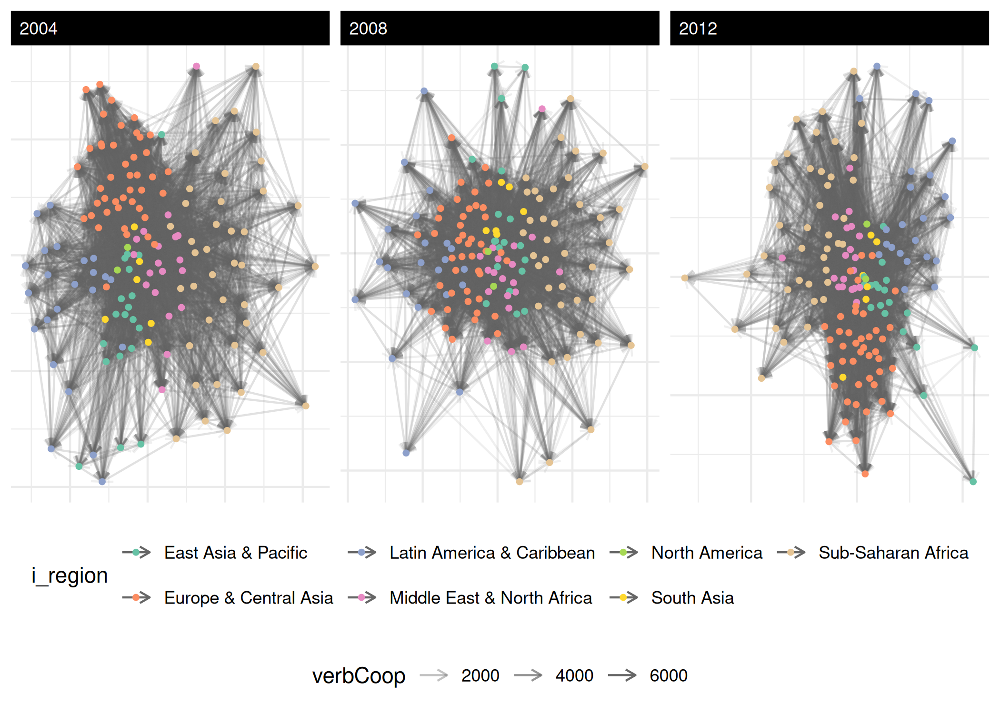

Quickstart to Inference
Cassy Dorff and Shahryar Minhas
2026-05-29
Source:vignettes/foundations_lite.Rmd
foundations_lite.RmdThis is a minimal end-to-end tour of netify that uses
only the data bundled with the package — no
peacesciencer, no countrycode, no external
downloads. If you want the full IR-data walkthrough with covariates from
outside sources, see the Foundations vignette.
We’ll cover the four things netify is for:
- Build a network object from dyadic data 🛠
- Explore it with summary statistics and a quick plot 🔎
- Test a couple of basic inferential questions 📊
- Bridge out to other packages when you want to model 🔁
1. Build 🛠
The bundled icews dataset has ICEWS event-data slices
for 152 countries from 2002 to 2014 with the four “quad” variables
(verbal/material × cooperation/conflict) plus a handful of nodal
covariates.
data(icews)
head(icews[, c("i", "j", "year", "verbCoop", "matlConf", "i_polity2", "i_region")])
#> i j year verbCoop matlConf i_polity2 i_region
#> 2 Afghanistan Albania 2002 6 0 NA South Asia
#> 3 Afghanistan Albania 2003 1 0 NA South Asia
#> 4 Afghanistan Albania 2004 10 1 NA South Asia
#> 5 Afghanistan Albania 2005 0 0 NA South Asia
#> 6 Afghanistan Albania 2006 6 21 NA South Asia
#> 7 Afghanistan Albania 2007 3 0 NA South AsiaTurn it into a netify object with one call:
verb_coop <- netify(
icews,
actor1 = "i", actor2 = "j", time = "year",
symmetric = FALSE,
weight = "verbCoop",
nodal_vars = c("i_polity2", "i_log_gdp", "i_region"),
dyad_vars = c("matlCoop", "verbConf")
)
#> ℹ `missing_to_zero` is set to "TRUE" (the default).
#> ! Missing dyads will be filled with zeros. For latent space or other
#> statistical network models, structural zeros and missing data have different
#> meanings. Set `missing_to_zero = FALSE` to preserve NAs if this distinction
#> matters for your analysis.
#> This message is displayed once per session.
print(verb_coop)
#> ✔ Hello, you have created network data, yay!
#> • Unipartite
#> • Asymmetric
#> • Weights from `verbCoop`
#> • Longitudinal: 13 Periods
#> • # Unique Actors: 152
#> Network Summary Statistics (averaged across time):
#> dens miss mean recip trans
#> verbCoop 0.418 0 19.114 0.976 0.627
#> • Nodal Features: i_polity2, i_log_gdp, i_region
#> • Dyad Features: matlCoop, verbConfThe print() summary tells you the network is unipartite,
directed, longitudinal (13 periods), 152 actors, with nodal and dyadic
features attached. The numeric table shows density, missingness, mean
edge weight, mutual-dyad proportion, and transitivity averaged across
time.
A quick glossary, since several of these terms appear before they’re defined elsewhere:
- unipartite: one kind of actor (countries here). The opposite is bipartite – two kinds, e.g., students-to-clubs.
-
directed / symmetric: a directed
tie has a sender and a receiver (
i -> jis different fromj -> i); a symmetric tie does not. - density: share of possible ties that are actually present (0 = no ties, 1 = complete graph).
- transitivity: probability that two of your friends are also friends with each other – “friend of a friend is a friend.” Higher = more clustering.
-
mutual-dyad proportion (
mutual): among ordered pairs where at least one tie exists, the share where bothi -> jandj -> iare present. -
reciprocity: correlation between the adjacency
matrix
Aand its transposeA^T; behaves likemutualfor binary networks but generalizes to weighted ones.
2. Explore 🔎
summary() returns one row per time period with
graph-level statistics:
gs <- summary(verb_coop)
head(gs[, c("net", "num_actors", "density", "reciprocity", "mutual", "transitivity")])
#> net num_actors density reciprocity mutual transitivity
#> 1 2002 152 0.3787034 0.9778217 0.8537001 0.6058952
#> 2 2003 152 0.3871994 0.9632488 0.8479933 0.6072045
#> 3 2004 152 0.4145173 0.9769563 0.8452289 0.6215978
#> 4 2005 152 0.4071976 0.9804325 0.8386779 0.6215075
#> 5 2006 152 0.4108139 0.9771928 0.8510012 0.6277829
#> 6 2007 152 0.4243203 0.9783703 0.8511690 0.6330626Note both reciprocity (the correlation between
and
,
useful for weighted networks) and mutual (the classic
mutual-dyad proportion). Use whichever fits your audience.
Actor-level stats — degree, prop_ties, centrality, strength — come
from summary_actor(). Quick definitions of what shows up in
the columns:
- degree_in / degree_out / degree_total: count of incoming, outgoing, or total ties for an actor.
- prop_ties_*: those degree counts divided by the number of possible partners.
- strength: sum / average / sd of the weights of an actor’s ties (parallel to degree but weight-aware).
- betweenness: how often an actor sits on the shortest path between two others – a broker score.
- closeness: how short the actor’s average distance is to everyone else.
- authority_score / hub_score (HITS): authorities are nodes that many hubs point to; hubs are nodes that point to many authorities. Useful in directed networks (e.g., who’s getting cited vs. who’s doing the citing).
as_ <- summary_actor(verb_coop)
head(as_[, c("actor", "time", "degree_in", "degree_out",
"betweenness", "authority_score", "hub_score")])
#> actor time degree_in degree_out betweenness authority_score
#> 1 Afghanistan 2002 92 81 1.324503e-02 0.26866096
#> 2 Albania 2002 46 49 0.000000e+00 0.01252200
#> 3 Algeria 2002 68 65 0.000000e+00 0.01406673
#> 4 Angola 2002 64 67 8.830022e-05 0.01905067
#> 5 Argentina 2002 48 48 0.000000e+00 0.03580770
#> 6 Armenia 2002 71 66 0.000000e+00 0.05049222
#> hub_score
#> 1 0.183233794
#> 2 0.009730031
#> 3 0.010671854
#> 4 0.011275109
#> 5 0.024732267
#> 6 0.039622725Plot it. The default uses auto_format = TRUE and adapts
to network size — for 152 actors over 13 years it’ll suppress text
labels and tone down edge alpha automatically:
plot(verb_coop,
time_filter = c("2004", "2008", "2012"),
node_color_by = "i_region",
edge_alpha = 0.1) +
theme(legend.position = "bottom")
3. Test (basic inferential) 📊
A common first question is homophily: do similar countries cooperate more? Test it:
hom <- homophily(verb_coop,
attribute = "i_polity2",
method = "correlation",
significance_test = TRUE)
head(hom)
#> net layer attribute method threshold_value homophily_correlation
#> 1 2002 verbCoop i_polity2 correlation 0 0.04748475
#> 2 2003 verbCoop i_polity2 correlation 0 0.06524684
#> 3 2004 verbCoop i_polity2 correlation 0 0.04890319
#> 4 2005 verbCoop i_polity2 correlation 0 0.04449142
#> 5 2006 verbCoop i_polity2 correlation 0 0.04251867
#> 6 2007 verbCoop i_polity2 correlation 0 0.02752028
#> mean_similarity_connected mean_similarity_unconnected similarity_difference
#> 1 -6.902356 -7.458243 0.5558868
#> 2 -6.752253 -7.508904 0.7566510
#> 3 -6.879106 -7.452132 0.5730257
#> 4 -6.786878 -7.310313 0.5234353
#> 5 -6.812569 -7.315192 0.5026230
#> 6 -6.893420 -7.213425 0.3200055
#> p_value ci_lower ci_upper n_connected_pairs n_unconnected_pairs
#> 1 0.000 0.027520711 0.06647919 4117 6909
#> 2 0.000 0.046870917 0.08523940 4105 6626
#> 3 0.000 0.028388089 0.06668147 4475 6403
#> 4 0.000 0.025422777 0.06282340 4481 6545
#> 5 0.000 0.023632765 0.06090860 4503 6523
#> 6 0.002 0.008053892 0.04686962 4635 6391
#> n_missing n_pairs
#> 1 3 11476
#> 2 5 11476
#> 3 4 11476
#> 4 3 11476
#> 5 3 11476
#> 6 3 11476For a categorical attribute, mixing_matrix() gives the
full who-with-whom table:
mm <- mixing_matrix(verb_coop, attribute = "i_region", normalized = TRUE)
round(mm$mixing_matrices[[1]], 2)
#> East Asia & Pacific Europe & Central Asia
#> East Asia & Pacific 0.03 0.04
#> Europe & Central Asia 0.04 0.18
#> Latin America & Caribbean 0.01 0.03
#> Middle East & North Africa 0.02 0.04
#> North America 0.00 0.01
#> South Asia 0.01 0.02
#> Sub-Saharan Africa 0.02 0.04
#> Latin America & Caribbean Middle East & North Africa
#> East Asia & Pacific 0.01 0.02
#> Europe & Central Asia 0.02 0.05
#> Latin America & Caribbean 0.03 0.01
#> Middle East & North Africa 0.01 0.04
#> North America 0.00 0.00
#> South Asia 0.00 0.01
#> Sub-Saharan Africa 0.01 0.03
#> North America South Asia Sub-Saharan Africa
#> East Asia & Pacific 0.00 0.01 0.02
#> Europe & Central Asia 0.01 0.02 0.04
#> Latin America & Caribbean 0.00 0.00 0.01
#> Middle East & North Africa 0.00 0.01 0.03
#> North America 0.00 0.00 0.01
#> South Asia 0.00 0.00 0.01
#> Sub-Saharan Africa 0.01 0.01 0.07
mm$summary_stats[1, ]
#> net layer attribute assortativity diagonal_proportion entropy modularity
#> 1 2002 verbCoop i_region 0.1717675 0.3507823 3.33186 0.1346415
#> n_groups total_ties
#> 1 7 8692compare_networks() is the all-purpose comparison tool.
For a longitudinal netify it returns pairwise temporal comparisons:
temp_cmp <- compare_networks(verb_coop, method = "correlation")
head(temp_cmp$summary)
#> metric mean sd min max
#> 1 correlation 0.8392034 0.05285311 0.7127788 0.936436You can also slice by a nodal attribute and compare the resulting subnetworks:
by_region <- compare_networks(
subset(verb_coop, time = "2010"),
by = "i_region",
method = "correlation"
)
by_region$by_group$n_actors_per_group
#> East Asia & Pacific Europe & Central Asia
#> 19 43
#> Latin America & Caribbean Middle East & North Africa
#> 23 19
#> North America South Asia
#> 2 6
#> Sub-Saharan Africa
#> 404. Bridge 🔁
netify intentionally stops at descriptives + basic inference. For statistical models, hand off to a downstream package:
| Want to fit… | Use this | netify exporter |
|---|---|---|
| Latent factor / AME | amen | to_amen(netlet) |
| Longitudinal AME (varying actors) | netify-dev/lame | to_amen(netlet, lame = TRUE) |
| Multilayer dynamic bilinear | netify-dev/dbn | to_dbn(netlet) |
| Social relations model | netify-dev/srm | to_amen(netlet) |
| ERGM | ergm/statnet | to_statnet(netlet) |
| Community detection / graph algorithms | igraph | to_igraph(netlet) |
| Roll your own dyadic regression | — |
unnetify(netlet) for a long data frame |
Example: convert to igraph and use a function netify doesn’t expose:
ig <- to_igraph(verb_coop) # list of igraph objects, one per year
ig_2010 <- ig[["2010"]]
length(igraph::cluster_walktrap(ig_2010))
#> [1] 6Or flatten back to a dyadic data frame:
df <- unnetify(subset(verb_coop, time = "2010"), remove_zeros = TRUE)
head(df[, c("from", "to", "verbCoop", "matlCoop", "i_polity2_from", "i_polity2_to")])
#> from to verbCoop matlCoop i_polity2_from i_polity2_to
#> 1 Afghanistan Argentina 1 0 NA 8
#> 2 Afghanistan Armenia 7 2 NA 5
#> 3 Afghanistan Australia 125 0 NA 10
#> 4 Afghanistan Austria 1 0 NA 10
#> 5 Afghanistan Azerbaijan 7 0 NA -7
#> 6 Afghanistan Bahrain 3 0 NA -5tl;dr
net <- netify(df, actor1 = "i", actor2 = "j", time = "year", weight = "x")
summary(net) # graph-level stats
summary_actor(net) # actor-level stats
plot(net) # ggplot-based network visual
homophily(net, attribute = "v") # do similar actors connect?
compare_networks(net) # how do periods/layers/groups differ?
to_amen(net) # or to_dbn / to_statnet / to_igraph when you're ready to modelFor the long version with peacesciencer data and a full IR
walkthrough, see
vignette("foundations", package = "netify"). Have fun!
A note for non-time use cases
Most of netify’s docs talk about “longitudinal” networks because
that’s the bread-and-butter use case in social science. But the
underlying longit_list structure (a list of matrices, each
with its own actor set) works for any per-slice
partition, not just time. Common non-time examples:
- Per-subject networks: brain connectivity matrices, one per fMRI subject
- Per-replicate networks: synthetic networks drawn from a generative process
- Per-condition networks: networks observed under different experimental conditions
- Per-document networks: term co-occurrence networks, one per document
For these, build a list of matrices (one per partition) and use
either new_netify(list_of_matrices) or
netify(df, ..., time = "partition_id"). All of netify’s
per-period operations — summary(),
summary_actor(), faceted plot(),
subset(time = ...) — work identically; the variable name
just happens to be time. If the “time” framing gets
confusing in your context, alias it locally:
# build a per-subject network library
subjects <- new_netify(list_of_subject_matrices)
# treat the "time" dimension as subject
per_subject_stats <- summary(subjects)This generality is why the package treats longit_list as
a general partition format rather than a strictly temporal one.